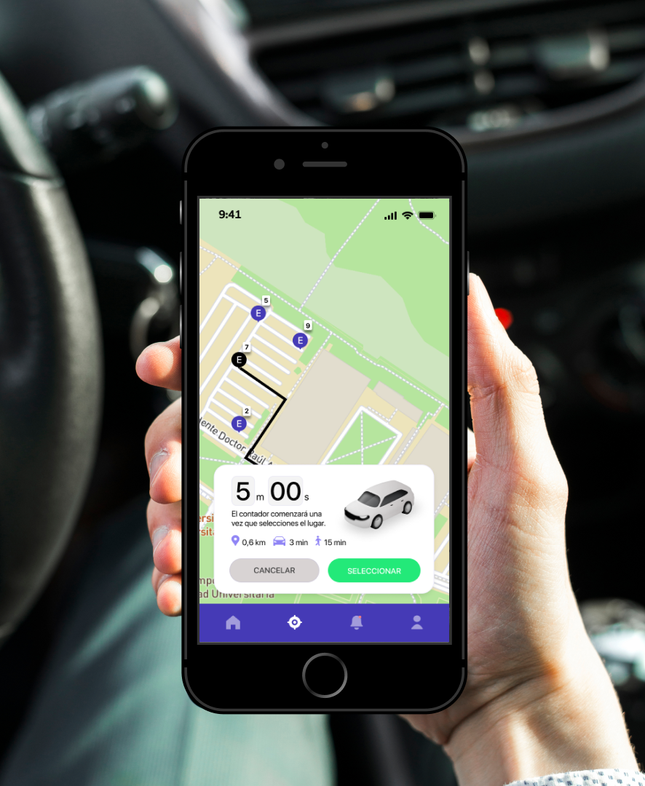
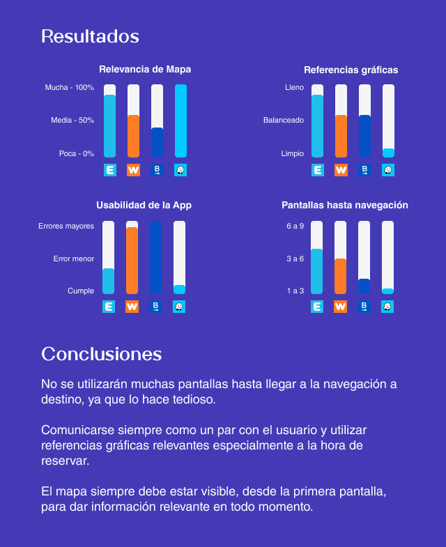

¿Estás cansado de perder tanto tiempo para encontrar un lugar para estacionar en Ciudad Universitaria? ¿Sentís que das vueltas y vueltas sin parar, y terminas llegando tarde a todas tus clases?
Park.ar es la aplicación para vos. Vas a poder encontrar lugar gratuitamente. Se podrá reservar el lugar al entrar a Ciudad Universitaria, y estará disponible para el usuario que lo haya reservado por los siguientes 5 minutos.
¡Es fácil, rápido y seguro! Descargala ahora.
El estacionamiento en Ciudad Universitaria es limitado y encontrar un lugar disponible puede ser un desafío para los estudiantes, profesores y visitantes. Esto puede llevar a largas búsquedas de estacionamiento, pérdida de tiempo y frustración.
Desarrollar una aplicación que permita a los usuarios encontrar lugares de estacionamiento disponibles de manera gratuita en Ciudad Universitaria. El objetivo principal es facilitar la experiencia de estacionamiento, reducir el tiempo de búsqueda y optimizar la utilización de los espacios disponibles.
Se propone una solución mediante una aplicación móvil para reservar lugares de estacionamiento gratuitos en Ciudad Universitaria. La aplicación mostrará la disponibilidad en tiempo real, permitirá reservas por 5 minutos al ingresar, requerirá notificaciones de liberación al abandonar un lugar y aplicará multas a quienes no cumplan. Además, contará con una interfaz amigable y se integrará con el GPS para facilitar la ubicación de los lugares disponibles.
Es una app para reservar estacionamiento. Ofrecen un sistema "Win-Win" para conductores y dueños de garajes.
Es una plataforma colaborativa que permitirá reservar y pre comprar un lugar donde estacionar el auto.
Es una aplicación para pagar el parkimetro desde el móvil, por el tiempo justo de aparcamiento.
Es una aplicación social de tránsito automotor en tiempo real y navegación asistida por GPS desarrollada por Waze.
*arquetipos validados tras entrevistas cualitativas
Se realizará una aplicación para poder encontrar lugar gratuitamente en el estacionamiento de Ciudad Universitaria.
Que los usuarios puedan buscar y seleccionar un lugar para estacionar su vehículo.
Que los usuarios puedan armar un cronograma personalizada según las materias y horarios en los que estén cursando.